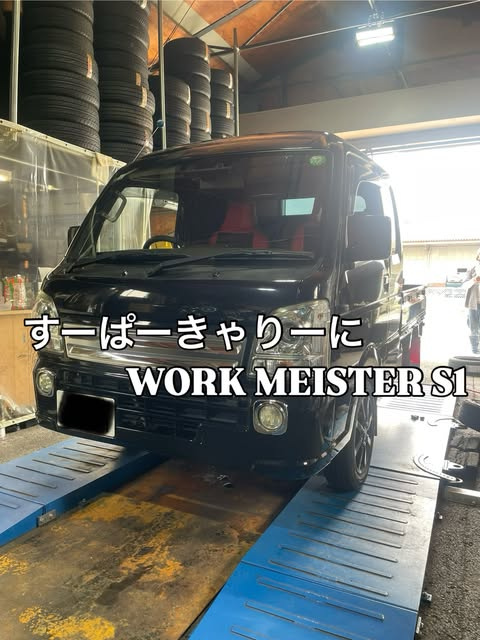
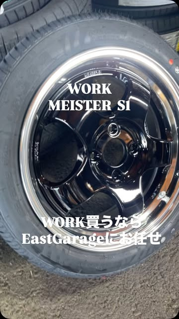
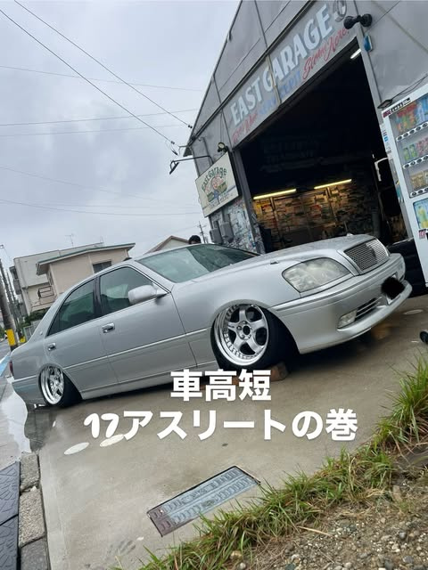
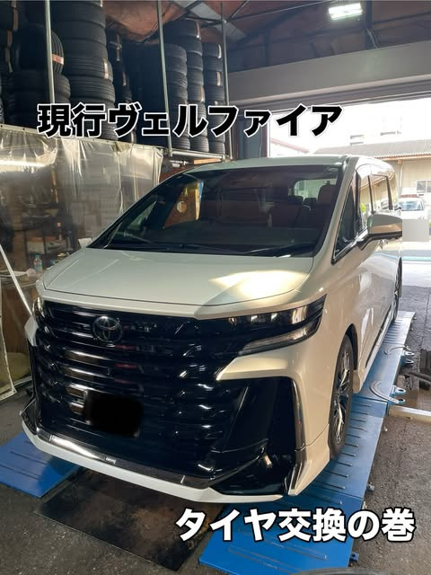
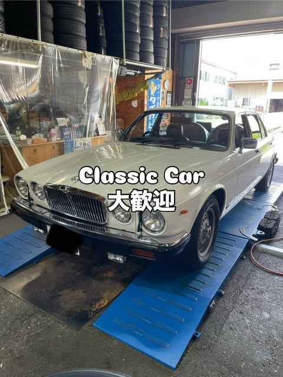
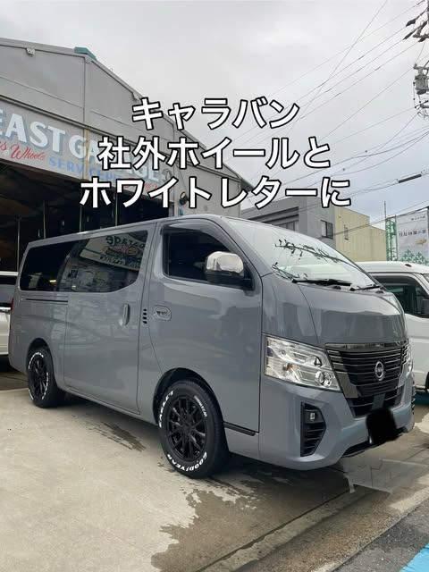

REAL PIT ARCHIVE — 67+ BLOG POSTS & INSTAGRAM
青いリフトの作業帖「〜の巻」
軽トラックからレクサスLFA、ハマーH2、旧車、欧州車まで。実際にこの青いリフトに載った作業事例の一部をご紹介します。
※過去の作業実績であり、全車種の受入を保証するものではありません。
SUPER CAR ON THE BLUE LIFTSUPER CAR ON LIFT
レクサス LFA タイヤ脱着・組替
BRIDGESTONE POTENZA / 大径純正ホイール
単管パイプにタイヤが並ぶいつものガレージで、白いレクサスLFAのタイヤ交換を実施。


KEI-TRUCK × WORK WHEELS
すーぱーきゃりーに WORK MEISTER S1
WORK MEISTER S1（WORK買うならEastGarageにお任せ）
軽トラックの足元に黒スポーク×深リムのMEISTER S1を装着。軽トラのカスタム・タイヤ交換も多数。

CROWN ATHLETE / DEEP RIM 5-SPOKE
「車高短 17アスリートの巻」
木製スロープを噛ませてガレージ前に停まる17クラウンアスリート。ローダウン車の作業もご相談ください。
YOKOHAMA GEOLANDAR A/T G015 [LT315/70R17 121/118S]
ハマー H2 極太オフロードタイヤ交換
大柄なフルサイズアメ車・SUVの315幅ホワイトレタータイヤ組替・脱着作業。
LIONHART LH-TEN [275/30ZR24 101W XL]
24インチ超扁平タイヤ組替事例
クローム深リムホイールへの 275/30ZR24 組替。大径サイズの持込・取り寄せも要相談。

TOYOTA VELLFIRE / PIT WORK
「現行ヴェルファイア タイヤ交換の巻」
青いリフトでの現行ヴェルファイアのタイヤ交換実績。ミニバン・SUVのタイヤ交換やホイール相談も承ります。

CLASSIC JAGUAR / S30Z / DAIHATSU MIDGET II
「Classic Car 大歓迎」旧車からミゼットIIまで
クラシックジャガーやS30フェアレディZ、ムーンディスク装着のミゼットIIなどの作業実績。旧車のご相談も歓迎します。

TOYO H20 [195/80R15 107/105N] / GOOD YEAR
「キャラバン 社外ホイールとホワイトレターに」
働くバン・ハイエース・キャラバンのバン規格ホワイトレタータイヤ＆社外ホイールセット。